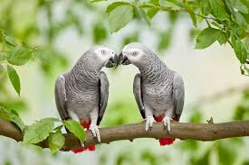

Are Parrots Monogamous?

When it comes to relationships, most people tend to fall into the monogamous side of things. Monogamy is a term used to describe a human that is married or in a relationship to one other human. Basically, they’re in a faithful relationship that is geared toward building it together as a whole. On the other hand, some humans follow polygamous relationships. Polygamous relationships are the polar opposite of a monogamous relationship in which a partner has multiple partners rather than one. However, none of that really matters. It all depends on the person and their own individual beliefs. Since we’re on the subject, you’re probably wondering if parrots are monogamous.
To answer the question…yes, parrots are monogamous. Oddly enough parrots tend to find one partner and stick with them. In the wild, they’ll stay near each other, find food together, and so on. Generally speaking, most species of animals are polygamous and aren’t faithful to one another. However, this isn’t the case with parrots. They look for a partner and under very rare circumstances do they leave their partner for another or seek another partner at the same time.